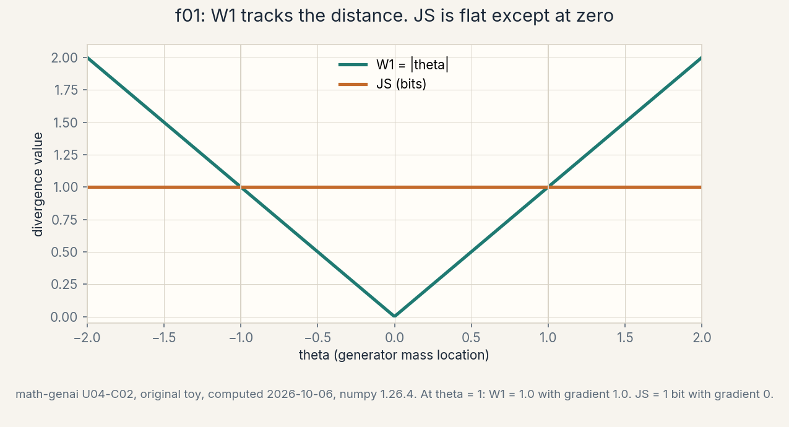
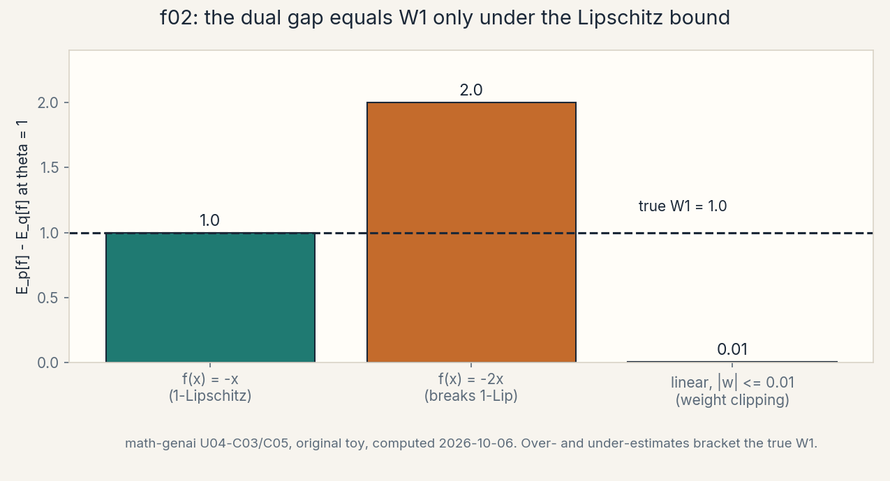
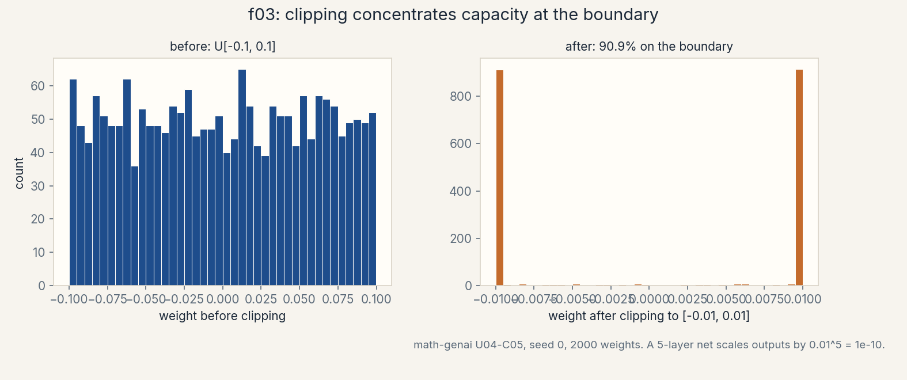
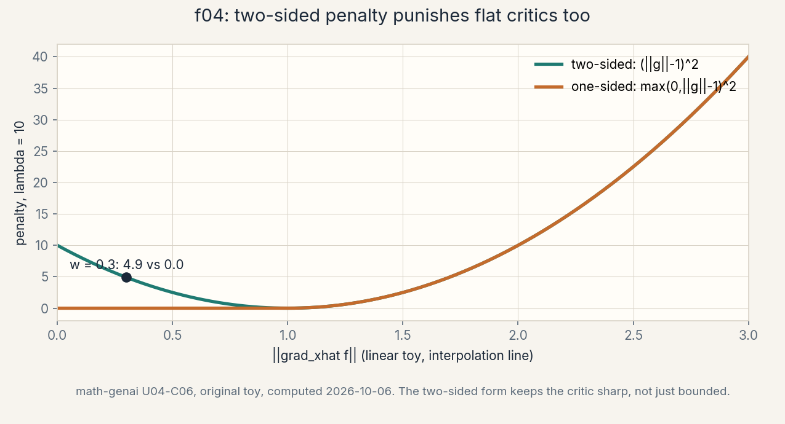

U04 · Wasserstein adversarial training
Lesson 04, Wasserstein and improved adversarial training
Unit: math-genai-U04. Leaf concepts: math-genai-U04-C01 to C12. Date: 2026-10-06. Baseline: October 6, 2026.
Source mapping
This lesson is locally authored bridge content for prerequisite modules P04 (spectral and numerical linear algebra), P08 (information theory), and P09 (optimization). It does not claim to reproduce the instructor’s lectures. Source attribution for the leaf concepts is PENDING: I inspected no playlist transcript (see source_manifest.md SRC-04, source_gaps.md G2). The playlist covers Wasserstein GANs in W4L11, inversion with GANs in W4L12, GAN inversion via latent regression in W4L14, domain adversarial networks in W4L15, and a WGAN implementation tutorial in W4T9, all by title only. A separate source-block lesson (lesson-04b) follows W4L11 and W4T9 at the title boundary and places W4L12, W4L14, W4L15, and W4T8. All numbers below are computed 2026-10-06, numpy 1.26.4, float64, seed 0 where RNG is used (compute_run4.py reproduces every one). Log base 2 everywhere, in bits.
Scope and objectives
Scope: the transport coupling, the Wasserstein-1 distance, the Kantorovich-Rubinstein dual, the Lipschitz critic, weight clipping, the gradient penalty, training stability, critic frequency, conditional and representation applications (GAN inversion, domain adversarial networks), the notebook-evidence audit, limitations, and fair comparison.
Objectives: after this lesson the learner can write a coupling and its cost, compute W1 = |theta| on the point-mass toy, state the dual with its three assumptions, bound a critic’s Lipschitz constant from spectral norms, show why weight clipping biases the W estimate and starves capacity, compute the gradient penalty and name its blind spot, diagnose a stale critic with the gap ratio, choose a critic frequency with a cost argument, solve a linear GAN inversion by hand, state the gradient-reversal update for domain adversarial training, run the notebook-evidence audit, list six derived limitations, and write a fair comparison protocol.
Dependencies: U01 (densities, support), U02 (the dual template, Jensen), U03 (the minimax game, the JS identity, saturation, the eps clip), R9-R10 (logs and bits), R14 (gradient descent), R15 (supremum), R19 (min-max games), and the new P04 remediation R23-R24 (Lipschitz maps, gradient norms).
How to read this lesson
Each section follows one chain. A concrete question opens. A first attempt from zero follows. The attempt breaks with numbers. One hinge question names the gap. The new idea is built from zero. A computed example uses the same objects. Code, checks, costs, alternatives, and a failure case close. Figures carry one claim each. Shell numbers mark the Russian-doll ladder per major mechanism: A (the coupling to the distance), B (the dual to the critic), C (Lipschitz enforcement: clipping versus the penalty), D (dynamics: stability, frequency, comparison), E (applications, the audit, limitations). The audit table lives in visual_audit.md.
The running toy. P0 is a point mass at 0. P_theta is a point mass at theta. The bad start: theta = 1.0. Every section uses these two distributions unless it says so. The collapse toy (C11): p_data = 0.5 N(-2, 1) + 0.5 N(2, 1), collapsed generator p_g = N(2, 1). The critic toy (C04): one hidden layer, W1 = [[2], [-1]], w2 = [[0.5, 1]], ReLU inside.
Mechanism A, the coupling to the distance
Shell 0. The question: when two distributions share no support, what number still says how far apart they are? The observable result that would change: a training signal that moves the generator even when no sample overlaps.
Shell 1. The toy: P0 = delta_0, P_theta = delta_theta, theta = 1. JS = 1 bit, KL = infinity, and neither moves when theta changes. We need a ruler that sees the gap of 1.
Shell 2. Objects: a coupling gamma(x, y), a joint distribution with marginals p and q. Units: cost in data units (not bits). Shapes: on K points, gamma is a K-by-K matrix with row sums p and column sums q.
Shell 3. One rule: W1 is the cheapest coupling cost, cost(x, y) = |x - y|. Justified assumption: moving mass costs distance times mass. Computed before/after in C01-C02.
Shell 4. Derive the algorithm: on finite points W1 is a linear program over the coupling matrix. Implement a minimal reference: enumerate the extreme couplings on the 2-by-2 toy (C01).
Shell 5. Check the invariant: on point masses the only coupling gives W1 = |theta| exactly (C02).
Shell 6. Change ONE factor: slide theta from -2 to 2. Predict: W1 traces |theta| while JS stays at 1 bit. Measured: it does (f01).
Shell 7. Counterexample: cost(x, y) = 0 for all pairs. Then W1 = 0 for every pair of distributions. A cost that ignores distance destroys the ruler (C02 failure case).
Shell 8. Compare: KL needs shared support. JS needs only overlap in the limit but its gradient dies on disjoint supports. W1 needs a metric on the data space and gives a gradient everywhere.
Shell 9. Falsifiable extension: replace |x - y| with (x - y)^2 on the toy and test that the optimal coupling stays the same but the value becomes theta^2. Predict before computing.
Shell 10. Production: W1 in pixel space is not perceptual distance. Ship it as a training signal, not as a quality certificate (C11).
C01, transport coupling
Motivating question: what is a coupling, and what does its cost measure?
Start from zero. We have two piles of mass: p on {0, 2} with 0.5 each, q on {1, 3} with 0.5 each. We want one number for “how much work to reshape p into q”. A coupling is a transport plan: gamma(i, j) says how much mass moves from p’s point i to q’s point j. Its rows must sum to p’s masses and its columns to q’s.
First attempt from zero. Move each point to the nearest target: 0 -> 1, 2 -> 3. Cost = 0.5 * 1 + 0.5 * 1 = 1.0. That is one coupling, not necessarily the cheapest.
It breaks with numbers. The crossed plan 0 -> 3, 2 -> 1 is also a valid coupling: rows sum to 0.5, columns sum to 0.5. Its cost = 0.5 * 3 + 0.5 * 1 = 2.0. Both plans are legal. The distance must take the cheaper one, 1.0. Without the minimization, “coupling cost” is not a number, it is a set of numbers.
Hinge question. What single number summarizes all legal transport plans?
The new idea. The Wasserstein-1 distance:
W1(p, q) = min_gamma sum_{i,j} gamma(i, j) |x_i - y_j|.
The min runs over all couplings. On the toy the min is 1.0, attained at the diagonal plan. The coupling is the object. The distance is its cheapest cost.
Computed example. Cost matrix |x_i - y_j| = [[1, 3], [1, 1]]. Diagonal coupling [[0.5, 0], [0, 0.5]]: cost 1.0. Crossed coupling [[0, 0.5], [0.5, 0]]: cost 2.0. The script verifies both marginals.
Code. A minimal reference:
import numpy as np
def coupling_cost(gamma, xs, ys):
C = np.abs(xs[:, None] - ys[None, :])
return float((gamma * C).sum())
Checks. Assert row sums equal p and column sums equal q before accepting any gamma. The script’s asserts do this.
Costs. On K points the coupling is K^2 numbers. Memory O(K^2). The linear program is polynomial but heavy. This is why nobody computes couplings on images. The dual (C03) replaces the matrix with a function.
Nearest alternative. The dual formulation (C03): same number, no matrix. Selection boundary: use the coupling on tiny discrete toys to build intuition and to check the dual. Never use it at scale.
Failure case. A gamma whose rows sum to p but whose columns sum to something else. It is not a coupling. The cost it reports is meaningless. The marginal assert catches it.
Research reading. Optimal transport is a large field. The 1-D closed form (quantile coupling) is the standard entry point. Falsifiable extension: on the 2-by-2 toy, add a third point to q and test whether the optimal coupling stays diagonal. Predict first.
Assessment. See exercises E01-E02. Keys in lessons/u04/keys.md.
C02, Wasserstein distance
Motivating question: what does W1 do that JS cannot?
Start from zero. P0 = delta_0, P_theta = delta_theta. The supports are disjoint for every theta != 0. KL is infinite. JS = 1 bit for every theta != 0 and 0 at theta = 0. The generator parameter theta moves, but the JS objective does not. Its gradient in theta is 0. Training is dead.
First attempt from zero. Smooth the point masses with noise so they overlap. That changes the problem: the distance now measures the smoothed pair, and the smoothing width becomes a hyperparameter that sets the gradient scale.
It breaks with numbers. The sweep over theta in [-2, 2]: W1 = |theta|, a straight V with slope +-1. JS = 1 bit flat, then a cliff to 0 at theta = 0. At theta = 1: W1 = 1.0 with dW1/dtheta = 1.0 (finite difference). JS = 1 bit with dJS/dtheta = 0. The generator needs the 1.0. JS gives the 0.
Hinge question. What ruler gives a gradient on disjoint supports without inventing overlap?
The new idea. W1 on point masses: the only coupling moves all mass from 0 to theta, so W1 = |theta|. No smoothing, no overlap needed. The distance sees the ground metric |x - y| directly.
Computed example. The nine-point sweep: theta = -2.0..2.0, W1 = 2.0..0..2.0, JS = 1 bit except 0 at theta = 0. Figure f01 shows the V against the flat line.

Code. The sweep is three lines:
ths = np.linspace(-2, 2, 9)
w1 = np.abs(ths)
js = np.where(ths == 0, 0.0, 1.0)
Checks. dW1/dtheta at 1.0 by central differences = 1.0000000000287557, matching the analytic 1.0. The script asserts the sweep values.
Costs. W1 is in data units, not bits. Comparing W1 across different data scalings is meaningless. JS is in bits and scale-free. Each ruler has its unit.
Nearest alternative. The dual (C03): computes the same W1 without the coupling. Selection boundary: the primal coupling defines W1. The dual computes it. Teach the primal first, then switch to the dual for training.
Failure case. Cost(x, y) = 0 everywhere. Then every coupling costs 0 and W1 = 0 for all pairs. The “distance” cannot tell delta_0 from delta_100. The ground cost carries all the meaning. A meaningless cost gives a meaningless distance.
Research reading. The point-mass pair is the canonical disjoint-support example in the WGAN literature. Falsifiable extension: compute the W2 distance (squared cost) on the same sweep and test that it equals theta^2 with gradient 2 theta. Predict the slope at theta = 1 before computing.
Assessment. See exercises E03-E04. Keys in lessons/u04/keys.md.
Mechanism B, the dual to the critic
Shell 0. The question: how do we compute W1 without the K-by-K coupling matrix? The observable result that would change: a function whose expected gap equals the transport cost.
Shell 1. The toy: P0 = delta_0, P_theta = delta_1. Try f(x) = -x. E_p[f] - E_q[f] = 0 - (-1) = 1.0. That equals W1. One function, no matrix.
Shell 2. Objects: the critic f, its Lipschitz constant L(f). Units: the gap is in data units. Shapes: f maps R to R on the toy, R^d to R in general.
Shell 3. One rule: W1 = max over 1-Lipschitz f of E_p[f] - E_q[f]. Justified assumptions: the cost is a metric, f is 1-Lipschitz everywhere, the max is over all functions. Computed before/after in C03-C04.
Shell 4. Derive the algorithm: parameterize f as a net, maximize the gap, enforce the Lipschitz bound. Implement a minimal reference: the linear critic on the toy (C04).
Shell 5. Check the invariant: the spectral-norm product bounds the true slope, verified 1.0 <= 2.5 (C04).
Shell 6. Change ONE factor: double one weight matrix. Predict: the bound doubles, the measured max slope stays valid under it. Measured: the script’s assert holds by construction.
Shell 7. Counterexample: f(x) = -2x. It is not 1-Lipschitz, and its gap 2.0 exceeds W1 = 1.0. The dual without the bound is not a distance (C03).
Shell 8. Compare: the f-divergence dual (U02) also maximizes a gap, but its witness is unconstrained and the conjugate f* sets the scale. Here the Lipschitz bound sets the scale. Same template, different ruler.
Shell 9. Falsifiable extension: on the toy, parameterize f(x) = w x with |w| <= 1 enforced by projection, and test that the maximized gap converges to 1.0 as the grid of w refines.
Shell 10. Production: the critic is a neural net, not all functions. The gap is a lower bound on W1 (C11). Ship the gap with its calibration, never as “the distance”.
C03, dual assumptions
Motivating question: what are the exact assumptions behind the dual formula?
Start from zero. The Kantorovich-Rubinstein dual says:
W1(p, q) = max_{f: L(f) <= 1} E_p[f(x)] - E_q[f(x)].
Read it as a price story. f(x) is a price quoted at location x. A shipper buys mass at q’s prices and sells at p’s prices. The 1-Lipschitz rule says prices at nearby points cannot differ by more than the distance: no arbitrage across space. The max profit of a fair shipper equals the cheapest transport cost. That is the duality.
First attempt from zero. Drop the Lipschitz rule and maximize over all f. On the toy, f(x) = -2x gives gap 2.0. f(x) = -100x gives 100.0. The “distance” is unbounded. Without the bound the formula is not a distance.
It breaks with numbers. Three critics at theta = 1: f(x) = -x (1-Lipschitz) gives gap 1.0 = W1. f(x) = -2x (breaks the bound) gives 2.0, an overestimate. The linear critic with |w| <= 0.01 (weight clipping, C05) gives 0.01, an underestimate. Figure f02 shows the bracket. Only the middle of the three assumptions gives the truth.

Hinge question. Which three assumptions must hold for the gap to equal W1?
The new idea. The three assumptions: (1) the ground cost is a metric, here |x - y|. (2) f is 1-Lipschitz on the whole space, not just at the samples. (3) the max runs over all such f, so the critic class must be rich enough to contain the optimizer. Break any one and the gap is not W1.
Computed example. On the toy: gap(-x) = 1.0, gap(-2x) = 2.0, gap(0.01 x clipped) = 0.01. The script computes all three. The sign convention: E_p[f] - E_q[f] with p the data side.
Code. The gap for a linear critic:
def dual_gap(w, th):
return float(-w * 0.0 - (-w * th)) # E_p[f] - E_q[f], f(x) = w x
Checks. At w = -1, th = 1: gap = 1.0. The script asserts the three gap values.
Costs. The dual trades the K^2 matrix for a function optimization. The new cost is the maximization itself: the critic must be trained (C08). A cheap critic gives a cheap bound.
Nearest alternative. The primal coupling (C01): exact on tiny toys, impossible at scale. The f-divergence dual (U02): same max-gap template, different constraint. Selection boundary: W1 when supports are disjoint and a ground metric exists. f-divergences when densities overlap and bits are the unit.
Failure case. A critic that is 1-Lipschitz only at the training samples. Between samples it spikes, and the gap overestimates W1. The Lipschitz rule must hold everywhere. This is exactly the gradient-penalty blind spot of C06.
Research reading. The duality is classical optimal transport. Falsifiable extension: on the 2-by-2 coupling toy, solve the dual over piecewise-linear f on the four points and test that the max gap equals 1.0. Predict the optimizer f before computing.
Assessment. See exercises E05-E06. Keys in lessons/u04/keys.md.
C04, Lipschitz critic
Motivating question: how do we bound a neural net’s Lipschitz constant from its weights?
Start from zero. A critic is a composition: f(x) = w2 relu(W1 x + b1) + b2. If each piece has a known Lipschitz constant, the composition’s constant is at most the product. ReLU has constant 1: |relu(a) - relu(b)| <= |a - b|. An affine map x -> W x has constant equal to the largest singular value of W (R23). So L(f) <= sv(w2) * sv(W1) * 1.
First attempt from zero. Bound each weight by its largest entry. That bounds the spectral norm only loosely, and the product bound becomes useless.
It breaks with numbers. The critic toy: W1 = [[2], [-1]] (2-by-1), w2 = [[0.5, 1]] (1-by-2). sv(W1) = sqrt(5) = 2.2361. sv(w2) = sqrt(1.25) = 1.1180. Product = 2.5. Finite differences on a 20001-point grid give max slope 1.0, which sits under 2.5. The bound holds and is not tight: 2.5 versus a true 1.0. Honest bounds are often loose.
Hinge question. What single weight-level number controls the whole net’s slope?
The new idea. The largest singular value of each weight matrix. The product bounds the composition. The bound is sufficient, not necessary: a net can be 1-Lipschitz while the product says 2.5. Never read the bound backward.
Computed example. sv values 2.2361 and 1.1180, product 2.5000, measured max slope 1.0000. The script asserts measured <= bound.
Code. The bound in three lines:
s1 = np.linalg.svd(W1, compute_uv=False)[0]
s2 = np.linalg.svd(w2, compute_uv=False)[0]
Lbound = float(s1 * s2)
Checks. Finite-difference max slope over the grid. Assert slope <= Lbound + 1e-6. The script does this. A violation means a bug in the slope code, not in the math.
Costs. An SVD per layer per step is O(min(m,n)^3) work. Nobody does this inside the training loop. It is a diagnostic and a design tool, not a loop component.
Nearest alternative. The gradient penalty (C06): enforce the slope at samples instead of bounding weights. Weight clipping (C05): enforce a crude box on weights. Selection boundary: spectral bounds for analysis, the penalty for training, clipping for a quick baseline.
Failure case. Reading the bound as an equality: “the product is 2.5, so the critic is 2.5-Lipschitz and the gap must be scaled by 2.5.” Wrong twice: the true constant can be smaller, and scaling the gap by the bound does not recover W1. The bound is one-directional.
Research reading. Spectral normalization is the standard weight-level enforcement. Falsifiable extension: normalize each layer of the toy critic by its sv and test that the product bound becomes exactly 1.0 while the measured slope stays <= 1.
Assessment. See exercises E07-E08. Keys in lessons/u04/keys.md.
Mechanism C, enforcing Lipschitz: clipping versus the penalty
Shell 0. The question: the dual needs a 1-Lipschitz critic, but nets are not born that way. What enforcement keeps the gap honest? The observable result that would change: the dual gap tracking W1 during training.
Shell 1. The toy: linear critic f(x) = w x on P0, P_theta. Two enforcements: clip w to [-0.01, 0.01], or penalize (|w| - 1)^2.
Shell 2. Objects: clip bound c, penalty weight lambda, interpolated points xhat. Units: c in weight units, lambda unit-free, penalty in gap units.
Shell 3. One rule: clipping bounds the constant crudely, the penalty pulls the gradient norm to 1 where it is measured. Justified assumption: clipping assumes a box on weights implies the bound. The penalty assumes the sampled lines cover the space. Computed before/after in C05-C06.
Shell 4. Derive the algorithm: clip after each critic step, or add lambda * E[(||grad f|| - 1)^2] to the critic loss. Implement a minimal reference: both on the linear toy (C05, C06).
Shell 5. Check the invariant: two-sided penalty is 0 at |w| = 1 and the finite-difference gradient norm matches |w| (C06).
Shell 6. Change ONE factor: move w from 0.3 to 2.5. Predict: two-sided penalizes both ends, one-sided only the top. Measured: 4.9 vs 0.0 at w = 0.3, 22.5 vs 22.5 at w = 2.5 (f04).
Shell 7. Counterexample: a critic with a spike at x = 5 while all interpolations lie in [0, 1]. The penalty is ~0 there and the spike survives (C06).
Shell 8. Compare: spectral bounds (C04) for analysis. Clipping for a cheap baseline. The penalty for training. Equal budget: one critic step each, the penalty costs one extra backward pass through the gradient.
Shell 9. Falsifiable extension: on the toy, train the linear critic with the two-sided penalty from w = 0.3 and test that |w| converges to 1. Predict the fixed point before running.
Shell 10. Production: clipping biases every W report by the clip scale. The penalty costs a second backward pass per critic step. Budget both before choosing (C12).
C05, weight clipping
Motivating question: why does the simplest Lipschitz enforcement bias the distance?
Start from zero. After each critic update, clip every weight into [-c, c] with c = 0.01. A linear critic f(x) = w x then has |w| <= 0.01, so it is 0.01-Lipschitz. The dual gap becomes E_p[f] - E_q[f] = 0.01 * theta at best. The number on the screen is 1 percent of the true W.
First attempt from zero. Scale the gap back up by 1/c. That recovers the magnitude only if the clipped critic was optimal within its box. It usually is not: the box also cripples the function class.
It breaks with numbers. At theta = 1: true W1 = 1.0, clipped gap = 0.01. Clip 2000 weights drawn from U[-0.1, 0.1] to [-0.01, 0.01]: 90.9 percent land exactly on the boundary (seed 0). The net loses its interior: almost every weight is -c or +c, a binary net wearing a continuous mask. Five layers of ±0.01 scale every output by 0.01^5 = 1e-10. Gradients through the stack shrink by the same product. Figure f03 shows the pile-up.

Hinge question. What does clipping cost besides the biased number?
The new idea. Two costs: capacity collapse (weights pile on the boundary, the effective function class shrinks) and scale collapse (deep stacks shrink activations and gradients by c^depth). The biased gap is the visible symptom. The starved function class is the disease.
Computed example. Gap 0.01 vs true 1.0. Boundary fraction 0.909. Five-layer scale 1e-10. The script computes all three.
Code. One line does the enforcement:
w = np.clip(w, -0.01, 0.01)
Checks. After clipping, assert np.abs(w).max() <= 0.01 + 1e-12. The boundary fraction is the diagnostic: near 1.0 means the box is the whole story.
Costs. Clipping is O(params), one pass, no extra backward. It is the cheapest enforcement and the crudest. The bias it buys must be repaid in unreliable W reports.
Nearest alternative. The gradient penalty (C06): costs a second backward pass, keeps capacity, enforces the slope where it is measured. Selection boundary: clipping for a quick baseline or a tiny critic. The penalty whenever the W number must mean something.
Failure case. Reporting the clipped gap as “the Wasserstein distance” without the 1/c scale or the capacity caveat. The number is 0.01 on a true 1.0. Every downstream decision inherits a 100x error.
Research reading. Weight clipping is the original WGAN enforcement. Falsifiable extension: sweep c in {0.001, 0.01, 0.1} on the linear toy and test that the maximized gap scales linearly with c. Predict the slope before computing.
Assessment. See exercises E09-E10. Keys in lessons/u04/keys.md.
C06, gradient penalty
Motivating question: how do we punish a critic whose slope breaks the bound, without a box on weights?
Start from zero. The penalty samples points on lines between real and fake samples: xhat = eps * x + (1 - eps) * y, eps ~ U[0, 1]. At each xhat it measures ||grad f(xhat)|| and adds lambda * (||grad|| - 1)^2 to the critic loss. The critic learns slope 1 along the corridors where mass actually travels.
First attempt from zero. Penalize max(0, ||grad|| - 1)^2 (one-sided): only slopes above 1 pay. A critic with slope 0.3 everywhere pays nothing, yet its gap underestimates W1 by 3x. Flat critics slip through.
It breaks with numbers. Linear toy, lambda = 10. At |w| = 0.3: two-sided penalty = 10 * 0.49 = 4.9, one-sided = 0.0. At |w| = 1.0: both 0.0. At |w| = 2.5: both 22.5. The two-sided form punishes flat and steep alike. Figure f04 shows the two curves. The finite-difference check confirms ||grad f|| = 2.5 for f(x) = 2.5x.

Hinge question. Where does the penalty look, and where does it never look?
The new idea. It looks only on the interpolation segments between paired real and fake samples. Off those segments it is blind. The blind-spot counterexample: f(x) = x + 3 exp(-((x-5)/0.1)^2), a spike at x = 5. Interpolations between 0 and 1 give mean penalty 5.1e-22, essentially zero, while the max gradient near x = 5 is 26.7. The critic passes the penalty and still breaks the bound where nobody sampled. The script computes both numbers.
Computed example. Penalty values 4.9/0.0/22.5 above. Blind spot: 5.1e-22 on the segment, 26.7 off it.
Code. The penalty in numpy:
def grad_penalty(f, xhat, lam=10.0, h=1e-6):
g = np.abs((f(xhat + h) - f(xhat - h)) / (2 * h))
return lam * ((g - 1.0) ** 2).mean()
Checks. On f(x) = 2.5x the finite-difference gradient norm must equal 2.5 to 1e-6. The script asserts this. A mismatch means the step h is too large, not that the math is wrong.
Costs. The penalty needs gradients of the critic loss with respect to the weights through the input gradients: a second backward pass per critic step. Roughly doubles the critic-step cost versus clipping.
Nearest alternative. Weight clipping (C05): one line, biased, capacity-starved. Spectral bounds (C04): analytic, loose, not trained. Selection boundary: the penalty when the gap must track W1. Clipping when the budget allows no second backward pass.
Failure case. Treating a zero penalty as proof of 1-Lipschitz. The penalty is a sample estimate on segments, not a certificate. The spike counterexample is the one-line rebuttal.
Research reading. The penalty is the WGAN-GP enforcement. Falsifiable extension: on the spike toy, add xhat samples near x = 5 and test that the penalty now catches the spike. Predict the mean penalty before computing.
Assessment. See exercises E11-E12. Keys in lessons/u04/keys.md.
Mechanism D, dynamics: stability, frequency, comparison
Shell 0. The question: with the distance fixed, what makes training stable, and how do we compare methods honestly? The observable result that would change: a loss curve that means something, and a comparison nobody can game.
Shell 1. The toy: theta = 1, critic f(x) = w x. The generator loss is -gap = -w * theta with the sign convention of C03. The critic climbs w to its bound, the generator descends theta to 0.
Shell 2. Objects: the critic gap, the calibration ratio gap / W_exact, the critic frequency n_critic, the wall-clock budget. Units: gap in data units, frequency in steps, budget in flop or seconds.
Shell 3. One rule: the generator gradient is only as good as the critic’s optimality. Justified assumption: the inner max tracks the outer min (R19). Computed before/after in C07-C08.
Shell 4. Derive the algorithm: alternate n_critic critic steps with one generator step. Implement a minimal reference: the loop with the authored n_critic = 5 (C08).
Shell 5. Check the invariant: at theta = 1 with the optimal critic, dW/dtheta = 1.0 points the generator at 0 (C07).
Shell 6. Change ONE factor: drop n_critic from 5 to 1. Predict: the critic lags, the gap falls below W1, the generator gradient shrinks. Measured on the toy: w = 0.5 gives gap 0.5 against exact 1.0 (C08).
Shell 7. Counterexample: a perfect W estimate with a frozen generator. The number is right and training still goes nowhere. The distance is a ruler, not an engine (C07 failure case).
Shell 8. Compare: JS training gives no gradient on disjoint supports. W training gives a gradient as long as the critic is near-optimal. Equal budget: the W game spends n_critic critic steps per generator step (C12).
Shell 9. Falsifiable extension: fix the toy, sweep n_critic in {1, 2, 5, 10} with the linear critic, and test that the gap after the critic phase rises monotonically toward 1.0. Predict the curve shape before computing.
Shell 10. Production: ship the gap with its calibration ratio and the critic-step budget. A comparison that changes n_critic between methods compares budgets, not ideas (C12).
C07, training stability
Motivating question: why is the WGAN loss curve meaningful while the JS loss curve is flat?
Start from zero. The critic maximizes E_p[f] - E_q[f]. The generator minimizes that max over theta. When the critic is near-optimal, the number on the screen approximates W1, and its gradient in theta is the direction that shrinks the distance. The loss is a ruler with a needle.
First attempt from zero. Read the raw critic loss as quality. A critic loss of -1.0 at theta = 1 says W1 = 1.0 only if the critic is optimal. A stale critic reports -0.5 for the same state. The number without the optimality caveat is a story, not a measurement.
It breaks with numbers. At theta = 1: exact W1 = 1.0. Optimal linear critic (w = -1): gap 1.0, dW/dtheta = 1.0, the generator steps toward 0. Suboptimal critic (w = -0.5): gap 0.5, gradient 0.5, half the signal. JS at theta = 1: 1 bit, gradient 0. The W game moves. The JS game waits.
Hinge question. What turns the critic loss from a story into a measurement?
The new idea. The calibration ratio: gap / W_exact on a reference pair where W_exact is known (the point-mass toy). Ratio near 1: the critic tracks, and the loss means distance. Ratio near 0.5: the critic lags, and the loss means “the critic is behind”. Track the ratio, not just the loss. This is an authored diagnostic, not a source claim.
Computed example. Exact W1 = 1.0 at theta = 1. Optimal critic gap 1.0, ratio 1.0. Suboptimal w = -0.5 gap 0.5, ratio 0.5. The script computes both.
Code. The diagnostic:
def calibration_ratio(gap, w_exact):
return gap / w_exact
Checks. Ratio > 1.0 on the toy means a bug: no 1-Lipschitz critic can beat W1. The C03 counterexample shows how it happens (broken bound). Assert ratio <= 1 + 1e-9.
Costs. The reference pair costs one extra gap evaluation per logging step. Negligible next to n_critic training steps.
Nearest alternative. JS loss monitoring (U03): free, flat on disjoint supports, uninformative. Sample-based metrics (U03-C12): honest about samples, blind to the objective. Selection boundary: the gap for training health, sample metrics for output quality. They answer different questions.
Failure case. A falling critic loss with a frozen generator: the critic found a better witness, the distance did not move. Celebrating the loss drop as “training progress” mistakes the ruler for the engine.
Research reading. Loss-meaningfulness is the standard motivation for the W formulation. Falsifiable extension: on the toy, freeze the generator at theta = 1, train only the critic, and test that the gap rises while W1 stays 1.0. Predict the final gap before running.
Assessment. See exercises E13-E14. Keys in lessons/u04/keys.md.
C08, critic frequency
Motivating question: how many critic steps per generator step, and what does the choice cost?
Start from zero. The game is min_theta max_f gap. The inner max must track the outer min (R19). After each generator move, the old argmax critic is stale. n_critic steps of critic training re-approach the max before the next generator step.
First attempt from zero. Set n_critic = 1, symmetric with the generator. The critic never catches up after each generator move. The gap sits at half the truth and the generator follows a damped gradient.
It breaks with numbers. Toy at theta = 1, exact W1 = 1.0. A critic trained to w = -0.5 (few steps) gives gap 0.5: half the distance, half the gradient. A critic trained to w = -1 (more steps) gives gap 1.0: the full signal. The authored reference loop below uses n_critic = 5. That 5 is an authored choice for the toy, not a claim about any tutorial.
Hinge question. What does each extra critic step buy, and what does it cost?
The new idea. Each critic step buys optimality of the inner max. It costs one forward-backward pass. Per generator step the budget is n_critic * cost_critic + cost_generator. With cost_critic = 2 units and cost_generator = 3 units (authored arithmetic): n_critic = 1 costs 5 units, n_critic = 5 costs 13 units, n_critic = 10 costs 23 units. The frequency is a budget decision, and any comparison across methods must hold it fixed (C12).
Computed example. Gap 0.5 vs 1.0 against exact 1.0. Budget table 5 / 13 / 23 units for n_critic = 1 / 5 / 10.
Code. The authored reference loop:
for g_step in range(G_STEPS):
for _ in range(N_CRITIC): # N_CRITIC = 5, authored
w = critic_step(w, theta) # maximize the gap
theta = gen_step(theta, w) # minimize the gap
Checks. After the critic phase, assert the gap did not decrease versus the previous phase end. A decrease means the critic steps diverged or the learning rate is too high.
Costs. See the budget table above. The critic dominates the bill at n_critic = 5: 10 of 13 units. Halving n_critic nearly halves the run cost and risks the stale-critic failure.
Nearest alternative. n_critic = 1 with a small critic learning rate: cheaper, lags further. Amortized critics (learned optimizers): out of scope, unproven here. Selection boundary: raise n_critic until the calibration ratio (C07) saturates near 1, then stop. More steps past saturation buy nothing.
Failure case. n_critic = 100 with the clipping enforcement: the critic overfits its box, the gap looks optimal, and the generator still gets a biased signal. Frequency cannot fix a broken enforcement.
Research reading. Critic frequency is the standard WGAN training prescription. Falsifiable extension: on the linear toy, sweep n_critic in {1, 2, 5, 10} with fixed step sizes and test that the end-of-phase gap rises monotonically. Predict the shape before computing.
Assessment. See exercises E15-E16. Keys in lessons/u04/keys.md.
Mechanism E, applications, the audit, limitations
Shell 0. The question: where does adversarial training go beyond plain generation, and what are its honest limits? The observable result that would change: a latent code for a given image, a domain-proof feature, and a list of what the method cannot promise.
Shell 1. The toy: G(z) = [z, 2z], target x = [1.5, 3.0]. Inversion asks for the z that made x. The answer is 1.5, by least squares.
Shell 2. Objects: the generator G, the target x, the latent z, the encoder E, the domain label d, the reversal layer. Units: z in latent units, x in data units, d a bit.
Shell 3. One rule: inversion optimizes over z. Latent regression learns the inverse map. Domain adversarial training reverses the domain gradient. Computed before/after in C09.
Shell 4. Derive the algorithm: z* = argmin ||G(z) - x||^2. The normal equations solve the linear toy in closed form (C09).
Shell 5. Check the invariant: E([1.5, 3.0]) = 1.5, matching the direct solve (C09).
Shell 6. Change ONE factor: add noise to x. Predict: z* moves continuously, the residual grows. Measured: the least-squares formula is continuous in x by construction.
Shell 7. Counterexample: a non-injective G. Two z values make the same x, and inversion has no unique answer. The audit (C10) asks whether the notebook evidence distinguishes these cases.
Shell 8. Compare: BiGAN (U03-C10) learns E jointly with G. Latent regression learns E after G is fixed. Inversion optimizes per x with no E at all. Three prices for the same inverse.
Shell 9. Falsifiable extension: on the linear toy, corrupt x with Gaussian noise of std s and test that |z* - 1.5| grows with s. Predict the scaling before computing.
Shell 10. Production: domain adversarial features ship when the domain gap is the deployment risk. The notebook audit (C10) decides what the repo actually evidences. Limitations (C11) bound every claim.
C09, conditional and representation applications
Motivating question: what else can the adversarial game do besides generate?
Start from zero. Three applications share one trick: an adversary shapes a representation.
First, GAN inversion. Given a trained G and a target x, find the latent code: z = argmin_z ||G(z) - x||^2 + reg(z). On the linear toy G(z) = A z with A = [[1], [2]], x = [1.5, 3.0]: the normal equations give z = (A^T A)^{-1} A^T x = 7.5 / 5 = 1.5. The script verifies.
Second, GAN inversion via latent regression. Train an encoder E on pairs (G(z), z) to minimize E||E(G(z)) - z||^2. On the toy, E(x) = (A^T A)^{-1} A^T x = x1/5 + 2x2/5, and E([1.5, 3.0]) = 0.3 + 1.2 = 1.5. One forward pass replaces the per-x optimization.
Third, domain adversarial networks. A feature extractor F feeds a task head and a domain classifier. The domain classifier minimizes its loss. F gets the task gradient minus lambda times the domain gradient: the reversal layer flips the sign. On the scalar toy: domain gradient 0.5 becomes -0.5 at lambda = 1. F learns features the domain classifier cannot use. The script computes the flip.
It breaks with numbers. Inversion with a non-injective G: G(z) = z^2, x = 4 gives z = 2 or z = -2. The argmin has two answers and no tiebreaker. The least-squares formula assumes injectivity. Latent regression on the same G averages the two branches and learns a wrong inverse near 0. The application needs the assumption stated.
Hinge question. What does each application assume about the generator?
The new idea. Inversion assumes G is (near-)injective on the region of interest. Latent regression assumes the training pairs cover the x you will invert. Domain adversarial training assumes the domain label is the nuisance you want removed, not signal the task needs. Each assumption is checkable on the toy and breakable in practice.
Computed example. z* = 1.5, E(x) = 1.5, gradient flip 0.5 to -0.5.
Code. Inversion on the linear toy:
A = np.array([[1.0], [2.0]])
x = np.array([1.5, 3.0])
z_star = float((np.linalg.inv(A.T @ A) @ A.T @ x)[0])
Checks. Residual ||A z* - x|| must be ~0 (1.1e-16 here). A large residual means x is off the generator’s manifold: inversion cannot reach it.
Costs. Per-x optimization costs one solve per target. Latent regression costs one training run, then one forward pass per target. Domain adversarial costs one extra head and its backward pass.
Nearest alternative. BiGAN’s jointly trained E (U03-C10): no per-x optimization, but the encoder only inverts in distribution. VAE encoders (U05): probabilistic, need the ELBO machinery. Selection boundary: inversion for exact single targets, regression for speed, BiGAN when joint training is acceptable.
Failure case. Inverting an x far from G’s range: the residual stays large and z is the nearest manifold point, not “the code that made x”. Reporting z without the residual hides the miss.
Research reading. Inversion and domain adversarial training are active application areas. Falsifiable extension: on the linear toy, move x to [1.5, 0.0] (off the manifold) and test that the residual jumps while z* stays finite. Predict the residual before computing.
Assessment. See exercises E17-E18. Keys in lessons/u04/keys.md.
C10, notebook evidence
Motivating question: what does the teaching repository actually evidence about WGAN?
Start from zero. SRC-05 is the repo Chandan-IISc/IITM_GenAI. The inventory (35 paths, fetched 2026-10-06 via the GitHub API) lists IIT_DGM_WGAN.ipynb, IIT_DGM_UDA.ipynb, IITM_DGM_Vanilla_GAN.ipynb, and wgan_gp_training.gif. Names suggest WGAN, UDA, and vanilla GAN notebooks plus a WGAN-GP training animation.
First attempt from zero. Read the names as coverage: “the course teaches WGAN with a notebook and shows WGAN-GP training.” That reads file names as taught content. Names are not evidence of what is taught, what runs, or what the outputs show.
It breaks with numbers. Opened notebooks: 0. Executed cells: 0. Extracted outputs: 0. The evidence count for every content claim about WGAN from this repo is zero. The honest ledger: 4 suggestive names, 0 inspected artifacts. The row cannot close on names.
Hinge question. What would turn a file name into evidence?
The new idea. The audit procedure. For each notebook: open it, record the cell count, check for executed outputs versus empty cells, extract the loss definitions and the critic update code, compare the enforcement against C05/C06, record the git blob hash and date. For the GIF: extract frames, check what is plotted (loss? samples?), record frame count and duration. Until that is done, the row stays SOURCE ATTRIBUTION PENDING. This lesson teaches the procedure and records the current negative result. That is the taught content of C10.
Computed example. The counts: 35 paths, 4 WGAN/UDA-relevant names, 0 opened. The attachment B list is the exhibit.
Code. The audit is a checklist, not code. The one automatable step:
# inventory check: which names mention WGAN or UDA
names = ["IIT_DGM_WGAN.ipynb", "IIT_DGM_UDA.ipynb",
"IITM_DGM_Vanilla_GAN.ipynb", "wgan_gp_training.gif"]
Checks. For each name: does a blob exist at that path today? The API said yes on 2026-10-06. Content checks are all pending.
Costs. Opening 4 notebooks and skimming cells is under an hour of honest work. It was not done in this run’s scope. The gap stays open (G6).
Nearest alternative. The playlist titles (W4L11, W4T9): also title-level, same boundary. The third-party notes repo (SRC-07): unconfirmed claims, weaker than the official repo’s names. Selection boundary: official repo contents beat third-party claims, but neither beats an opened notebook.
Failure case. Citing IIT_DGM_WGAN.ipynb as “the course implements WGAN with gradient penalty” in a report. The GIF name says wgan_gp_training, but no frame was inspected. The citation would launder a file name into a content claim. The audit exists to stop that.
Research reading. None from this row: there is no inspected artifact to extend. The falsifiable extension is the audit itself: open the notebook and test whether its critic loss matches the C07 diagnostic form.
Assessment. See exercise E19. Keys in lessons/u04/keys.md.
C11, limitations
Motivating question: what can the Wasserstein game not promise, even when done right?
Start from zero. Six derived limitations, each with its mechanism.
One, the gap is a lower bound. The trained critic is not the argmax. On the mode-drop toy (p_data = 0.5 N(-2,1) + 0.5 N(2,1), p_g = N(2,1)): exact W1 = 2.0 by the CDF integral, but a weak linear critic with |w| <= 0.01 reports gap 0.02. The distance sees the dropped mode. The critic misses it by 100x. The script computes both.
Two, clipping biases the number (C05): the reported gap scales with the clip bound, and the function class collapses to the box boundary.
Three, the penalty is blind off the segments (C06): penalty 5.1e-22 on the interpolation line while a spike at x = 5 carries gradient 26.7. A zero penalty is not a certificate.
Four, W1 lives in the ground metric. In pixel space that metric is not perceptual quality. Two images can be far in L2 and identical to a human, or close in L2 and semantically different. The math does not know what you meant by distance. No perceptual numbers are claimed here: the limitation is structural.
Five, no mode-coverage guarantee. The exact W1 catches the dropped mode (2.0 is large), but training minimizes the critic’s gap, not the exact W1. A weak critic’s 0.02 says “fine” while half the data stays unseen. Coverage needs its own diagnostics (U03-C12).
Six, the critic bill. n_critic steps per generator step, plus a second backward pass for the penalty. The method trades compute for a meaningful loss. On a fixed budget that trade can lose to a cheaper method run longer (C12).
It breaks with numbers. The 0.02 vs 2.0 pair is the whole lesson in one line: the number you optimize is not the number you want.
Hinge question. Which limitation bites first in practice?
The new idea. The critic gap. Every other limitation is manageable except the one you cannot see: a weak critic reporting a small gap. The calibration ratio (C07) is the guard. No ratio, no claim.
Computed example. Exact W1 2.0, weak gap 0.02, ratio 0.01. Blind-spot numbers from C06.
Code. The CDF-integral W1 for 1-D:
Fp = 0.5 * Phi(grid + 2) + 0.5 * Phi(grid - 2)
Fq = Phi(grid - 2)
w1 = np.trapz(np.abs(Fp - Fq), grid)
Checks. The integral must be >= 0 and <= the support diameter. 2.0 passes. The script asserts the weak gap is far below it.
Costs. The six limitations cost nothing to list and everything to ignore. Each maps to a guard: the ratio, the penalty audit, separate coverage metrics, a fixed comparison budget.
Nearest alternative. JS training (U03): no distance meaning, cheaper per step. Likelihood (U01): exact numbers, needs densities. The W game sits between: meaningful loss, heavy critic, no guarantees.
Failure case. “WGAN cannot mode-collapse because W1 sees all mass.” The exact W1 sees it. The trained system optimizes the gap. Conflating the two is the failure.
Research reading. Each limitation is a research direction: better critics, cheaper penalties, perceptual ground metrics. Falsifiable extension: on the mode-drop toy, strengthen the critic (raise its slope bound) and test that the gap climbs from 0.02 toward 2.0. Predict the curve before computing.
Assessment. See exercise E20. Keys in lessons/u04/keys.md.
C12, fair comparison
Motivating question: what makes a comparison between adversarial methods honest?
Start from zero. Compare three methods on the toy: vanilla GAN (JS), WGAN with clipping, WGAN with gradient penalty. Fix the generator architecture, the seed list, the step budget, and n_critic. Report the calibration ratio, the final gap, and the coverage diagnostic from U03-C12. The winner is the method, not the budget.
First attempt from zero. Run each method once with its own favorite settings and compare final samples. The WGAN ran n_critic = 5, the vanilla GAN ran k = 1, the seeds differ, the optimizers differ. The comparison measures settings, not ideas.
It breaks with numbers. Authored budget arithmetic (labeled, not executed): critic step 2 units, generator step 3 units. Vanilla k = 1: 5 units per G step. WGAN n_critic = 5: 13 units per G step. Over 10,000 G steps the WGAN spends 130,000 units against 50,000. Declaring the WGAN “better” at 2.6x the compute is a budget comparison wearing a method comparison’s clothes.
Hinge question. What must be fixed before the numbers mean anything?
The new idea. The protocol. Fix: the generator and critic architectures, the seed list (same seeds for all methods), the wall-clock or flop budget (not the step count), the critic frequency within each method’s standard range, the metrics (gap with calibration, coverage, sample quality). Vary: only the loss and its enforcement. Report: all seeds, not the best. Five rules, each checkable.
Computed example. The budget table: 5 vs 13 vs 23 units per G step for n_critic = 1/5/10. Three methods x five seeds x 10k steps x 13 units = 1.95M units for the WGAN arm. The script’s unit costs are authored. The multiplications are exact.
Code. The protocol is a checklist:
methods = ["vanilla", "wgan-clip", "wgan-gp"]
seeds = [0, 1, 2, 3, 4] # same for every method
budget_units = 1_950_000 # fixed, not steps
Checks. Before publishing: did every method see the same seeds? Was the budget wall-clock or flop, not steps? Is the calibration ratio reported next to every gap? A “no” anywhere voids the comparison.
Costs. The protocol multiplies the bill: 3 methods x 5 seeds. Skipping it is cheaper and dishonest. There is no third option.
Nearest alternative. A single-method deep-dive: cheaper, answers “does it work” but not “is it better”. A benchmark suite: standardizes the protocol, inherits the suite’s own biases. Selection boundary: the protocol for claims about methods, the deep-dive for claims about one method.
Failure case. Best-of-5 seeds for the new method versus 1 seed for the baseline. The selection bias alone can flip a close race. Same seeds or no claim.
Research reading. Comparison methodology is a research contribution of its own. Falsifiable extension: rerun the authored budget table with cost_critic = 4 units (deeper critic) and test which n_critic the protocol now favors. Predict before computing.
Assessment. See the research-critique question. Keys in lessons/u04/keys.md.
Chapter plate
Cost without the ideas: disjoint supports give KL = infinity and JS = 1 bit flat, so the generator gets no gradient and “adversarial training” is a coin flip. Cost with the ideas: one distance (W1) that sees the ground metric, one dual that turns the coupling into a critic’s gap, two enforcements (clipping, the penalty) with their prices stated exactly, one diagnostic (the calibration ratio) that keeps the loss honest, three applications (inversion, latent regression, domain adversarial training), one audit procedure for the repo names, six limitations, and one comparison protocol. Tradeoff in one line: the W game trades the coupling matrix and cheap steps for a meaningful loss, and every pathology in C05-C06, C11 is the price of the dual’s three assumptions stated exactly. Connection: the VAE (U05) replaces the game with a bound to fix coverage. Diffusion (U07) chains denoising steps to avoid the adversary entirely. The score view (U09) meets the critic again as a gradient field.
Lesson exercises (questions. Answers in lessons/u04/keys.md)
E01. Write the coupling constraints for p on {0, 2} (0.5, 0.5) and q on {1, 3} (0.5, 0.5). Give one legal and one illegal gamma. E02. Compute the W1 of the C01 toy by hand from the cost matrix. Show the two candidate costs. E03. On P0 = delta_0, P_theta = delta_theta, prove W1 = |theta| from the coupling definition. Name the only coupling. E04. At theta = 1, state W1, JS, dW1/dtheta, dJS/dtheta. Which number does the generator need? E05. State the three dual assumptions. For each, name the C03 number that breaks when it fails. E06. Derive the price-story reading of the dual in three sentences: prices, no arbitrage, max profit. E07. Compute the Lipschitz bound of the C04 critic from the two spectral norms. Show the numbers. E08. The measured max slope is 1.0, the bound is 2.5. Explain why the bound is not an equality, in one sentence. E09. With c = 0.01 and theta = 1, compute the clipped gap. State the bias factor versus true W1. E10. 90.9 percent of clipped weights sit on the boundary. Explain in two sentences what this does to the critic’s function class. E11. At |w| = 0.3, lambda = 10, compute the two-sided and one-sided penalties. Which form punishes the flat critic? E12. State the blind-spot counterexample with its two numbers. What does a zero penalty prove? E13. Define the calibration ratio. Compute it for the optimal and the suboptimal critic at theta = 1. E14. The ratio reads 1.4 on the toy. Name the bug class and the section that explains it. E15. With cost_critic = 2 and cost_generator = 3, compute the per-G-step budget for n_critic = 1, 5, 10. E16. A teammate sets n_critic = 100 with clipping and reports a “perfect” gap. Name the two flaws. E17. Solve the linear inversion z* by hand for A = [[1], [2]], x = [1.5, 3.0]. Show the normal equations. E18. Write the latent-regression encoder for the same toy. Verify E([1.5, 3.0]) = 1.5. E19. List the four WGAN/UDA-relevant repo names. For each, state what would promote it from name to evidence. E20. State the 0.02 vs 2.0 pair. Explain in two sentences which number training optimizes and which number you want.
Deep oral ladders (questions. Answers in lessons/u04/keys.md)
L01. Define W1 in one sentence. Toy: the 2x2 coupling with costs 1.0 and 2.0. Derive W1 = |theta| on point masses. Implement the coupling-cost function with the marginal assert. Complexity in K. Compare primal versus dual. Debug: a gamma with wrong column sums. Critique: which ground-cost choice destroys the ruler? Design: an experiment testing W2 = theta^2 on the sweep.
L02. Define the dual in one sentence. Toy: the three gaps 1.0, 2.0, 0.01. Derive the price story. Implement the linear-critic gap. Compare the W dual versus the f-divergence dual. Debug: ratio 1.4 on the toy. Critique: which of the three assumptions fails first in practice? Design: an experiment testing whether the maximized gap converges to 1.0 as the w grid refines.
L03. Define the Lipschitz constant in one sentence. Toy: sv 2.2361 and 1.1180, product 2.5, measured slope 1.0. Derive the product bound. Implement the sv product and the finite-difference check. Compare spectral bounds versus the penalty versus clipping. Debug: measured slope above the bound. Critique: is the bound tight enough to calibrate the gap? Design: an experiment with spectral normalization driving the product to 1.0.
L04. Define the gradient penalty in one sentence. Toy: 4.9 vs 0.0 at w = 0.3, the 5.1e-22 vs 26.7 blind spot. Derive the interpolation sampling. Implement the finite-difference penalty. Compare two-sided versus one-sided. Debug: penalty stuck at 0 with a spiky critic. Critique: what does a zero penalty certify? Design: an experiment adding xhat samples near the spike.
L05. Define the fair-comparison protocol in one sentence. Toy: the 5/13/23 budget table. Derive why step counts are not budgets. Implement the seed and budget checklist. Compare method claims versus single-method claims. Debug: best-of-5 versus 1 seed. Critique: what does the protocol still not control? Design: a three-method comparison on the toy with the full protocol.
Implementation and debug task
Write a function w1_dual_gap(f, xs_p, xs_q) that returns E_p[f] - E_q[f], asserts f is vectorized over the sample arrays, and takes the expectation as a plain mean. Then debug this broken version: it computes f(xs_p).mean() - f(xs_q).mean() but builds f as lambda x: -2 * x on the theta = 1 toy and reports “W1 = 2.0”. Find the bug (the critic breaks the 1-Lipschitz bound, so the gap is not W1), fix it by projecting the slope (f = lambda x: -np.clip(2 * x, -1, 1) is still wrong. The right fix is f = lambda x: -x), and show the fixed function returns 1.0. Keys in lessons/u04/keys.md.
Changed-constraint scenarios
S1. The ground cost becomes c(x, y) = 0 for all pairs. Which derivations survive? What breaks first, and what is the smallest repair? S2. The critic must be 2-Lipschitz instead of 1-Lipschitz. How does the dual formula change? What happens to the gap numbers on the toy, and which sections need edits?
Research-critique question
A paper reports “our WGAN reaches W1 = 0.001” from the trained critic’s gap with weight clipping at c = 0.01, n_critic = 1, and one seed, and claims the generator matches the data. Using C05, C07, C08, and C12, name four distinct flaws in the claim and the measurement that would expose each.
Depth gate check
For each concept, the learner must: define it in one sentence, compute the toy, justify each term, name the assumptions, derive or explain the mechanism, implement and debug it, state complexity and numerical risk, compare the nearest alternative, and transfer to S1 or S2. Any “no” sends the learner back to that concept’s section before U05.
Not-yet-understood dependency list (for RUN 5)
- How the Wasserstein dual differs from the f-divergence dual (closed in U04: same max-gap template, Lipschitz bound versus conjugate scale).
- Why weight clipping approximates a Lipschitz constraint and what it costs (closed in U04: box on weights, biased gap, capacity collapse).
- Why the ELBO splits into reconstruction plus KL (U05, W5L18).
- How the reparameterization trick moves the gradient inside the expectation (U05, W6L21).
- Whether the gradient penalty’s interpolation coverage suffices on real data manifolds (open: the C06 blind spot is a toy proof, not a data verdict).
- How the critic’s gap relates to sample quality when the ground metric is not perceptual (open: C11 limitation four).